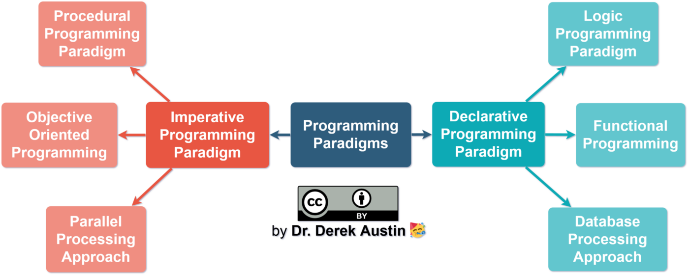

( mozilla.org )
;;;;;;;;Either or both.
;;;;;;;;Benefits of JavaScript
Disbenefits of JavaScript
Modern programming languages fall into two categories: imperative (also called procedural) and declarative (also called functional). JavaScript supports both.
( plainenglish.io )
;;;;;;;;The set of types in the JavaScript language consists of primitive values and objects.
Objects (collections of properties)
Primitive values (immutable datum represented directly at the lowest level of the language)
typeof(NaN) === "number"
Unlike all other possible values in JavaScript, it is not possible to use the equality operators (== and ===) to compare a value against NaN to determine whether the value is NaN or not, because both NaN == NaN and NaN === NaN evaluate to false. The isNaN() function provides a convenient equality check against NaN.
( mozilla.org )
When a variable is declared but not assigned to any value, the variable by default is assigned a value of undefined.
On the other hand, null is an object. It can be assigned to a variable as a representation of no value. JavaScript never sets a value to null. That must be done programmatically.
( flexiple.com )
;;;;;;;;In JavaScript, objects can be seen as a collection of properties. With the object literal syntax, a limited set of properties are initialized; then properties can be added and removed. Property values can be values of any type, including other objects, which enables building complex data structures. Properties are identified using key values. A key value is either a String value or a Symbol value.
const exampleObject1 = {type:"Value1", description:"this is an object"};
let exampleObject2 = {};
( mozilla.org )
;;;;;;;;an object literal is a list of name-value pairs comma-separated inside of curly braces. Those values can be properties and functions.
const exampleObject1 = {type:"Value1", description:"this is an object", exampleMethod: function() {return null;}};
;;;;;;;;In JavaScript, array is a single variable that is used to store different elements.
let exampleArray1=[]; let exampleArray2=new Array();
Arrays are automatically resized with .pop() or .push()
;;;;;;;;| Name | Description |
|---|---|
| concat() | Joins arrays and returns an array with the joined arrays |
| constructor | Returns the function that created the Array object's prototype |
| copyWithin() | Copies array elements within the array, to and from specified positions |
| entries() | Returns a key/value pair Array Iteration Object |
| every() | Checks if every element in an array pass a test |
| fill() | Fill the elements in an array with a static value |
| filter() | Creates a new array with every element in an array that pass a test |
| find() | Returns the value of the first element in an array that pass a test |
| findIndex() | Returns the index of the first element in an array that pass a test |
| forEach() | Calls a function for each array element |
| from() | Creates an array from an object |
| includes() | Check if an array contains the specified element |
| indexOf() | Search the array for an element and returns its position |
| isArray() | Checks whether an object is an array |
| join() | Joins all elements of an array into a string |
| keys() | Returns a Array Iteration Object, containing the keys of the original array |
| lastIndexOf() | Search the array for an element, starting at the end, and returns its position |
| length | Sets or returns the number of elements in an array |
| map() | Creates a new array with the result of calling a function for each array element |
| pop() | Removes the last element of an array, and returns that element |
| prototype | Allows you to add properties and methods to an Array object |
| push() | Adds new elements to the end of an array, and returns the new length |
| reduce() | Reduce the values of an array to a single value (going left-to-right) |
| reduceRight() | Reduce the values of an array to a single value (going right-to-left) |
| reverse() | Reverses the order of the elements in an array |
| shift() | Removes the first element of an array, and returns that element |
| slice() | Selects a part of an array, and returns the new array |
| some() | Checks if any of the elements in an array pass a test |
| sort() | Sorts the elements of an array |
| splice() | Adds/Removes elements from an array |
| toString() | Converts an array to a string, and returns the result |
| unshift() | Adds new elements to the beginning of an array, and returns the new length |
| valueOf() | Returns the primitive value of an array |
( w3schools.com )
;;;;;;;;( w3schools.com )
;;;;;;;;At a basic level, functions can be used to handle events in the webpage by rendering or derendering content.
;;;;;;;;Global variables can be declared normally outside functions and blocks, or with window.myVarName = "myVarValue";
( Kenan at stackoverflow.com )
;;;;;;;;;;;;;;;;
All local variables in javascript have function scope which means they are alive for the entire function they are declared in. Note that with the introduction of ES6 let, you can now use let inside your loop for real block-scoped variable
( Ronan at stackoverflow.com )
;;;;;;;;A callback function is a function that takes a function as input. The idea is that at some point it will call (back) the function it took as input.
A function that calls itself is a recursive function.
;;;;;;;;There are infinite truthy values, meaning values that are read as true logically. The falsy values are :
( mozilla.org )
;;;;;;;;--x decrements x and then returns the new value. The first code (--x) returns 4 3 2 1 0, the second (x--) returns 5 4 3 2 1
;;;;;;;;== allows type coercion where 7 == '7' is true, while === does not.
;;;;;;;;for in loops over enumerable property names of an object (such as keys). for of (new in ES6) does use an object-specific iterator and loops over the values generated by that.
( Graham at stackoverflow.com )
;;;;;;;;x is unaffected
;;;;;;;;value is changed
;;;;;;;;do-while always runs at least once. While only runs if condition is met.
;;;;;;;;it's an infinite loop
;;;;;;;;once a case is true, code will continue to execute in all following case statements until a break statement is reached
;;;;;;;;++x increments then prints, x++ prints then increments.
;;;;;;;;( crockford.com )
;;;;;;;;Hoisting is JavaScript's default behavior of moving all declarations to the top of the current scope (to the top of the current script or the current function). JavaScript first looks for variable declarations and then processes expressions.
Variables defined with let and const are hoisted to the top of the block, but not initialized.
( w3schools.com )
;;;;;;;;Variables created in a function without a declaration keyword are global. Global variable can be used in a function.
let a=4;
function exampleFct(){a=5};
exampleFct(); // a === 5 is true
function exampleFct(){b=5};
exampleFct(); // b is now defined and global.
console.log(b); // This prints 5
Sets arr to [1,2,3,4] and prints 1 4 9 16
;;;;;;;;prints: undefined
;;;;;;;;
In JavaScript, the this keyword refers to an object.
Which object depends on how this is being invoked (used or called).
The this keyword refers to different objects depending on how it is used:
( w3schools.com )
;;;;;;;;Lexical scope is the scope model used by the JavaScript language, which differs to some other languages which use dynamic scope. Lexical scope is the scope defined at lexing time.
The lexing phase of compilation determines where and how all identifiers are declared, and thus how they will be looked up during execution. This is the same mechanism which results in “hoisting” variables. The variables are not actually moved within the source code, the declarations simply occur during the lexing phase and so the JavaScript engine is aware of these before execution.
( astronautweb.co )
;;;;;;;;JavaScript objects are dynamic "bags" of properties (referred to as own properties). JavaScript objects have a link to a prototype object. When trying to access a property of an object, the property will not only be sought on the object but on the prototype of the object, the prototype of the prototype, and so on until either a property with a matching name is found or the end of the prototype chain is reached.
( mozilla.org )
;;;;;;;;
Anonymous function example
let show = function() {console.log("Hello")};
function hi(fct) {fct()};
hi(show); // console logs "Hello"
Answer with anonymous function:
document.getElementById('hi').addEventListener(function() {console.log("Hello")});
Arrow function example
function hi(fct) { fct(); };
hi( () => {console.log("Hello")} );
Answer with arrow function:
document.getElementById('hi').addEventListener( () => {console.log("Hello")} );
a try-catch block, or with promises one can use .catch(error => alert(error.message));
;;;;;;;;name and message